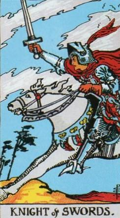
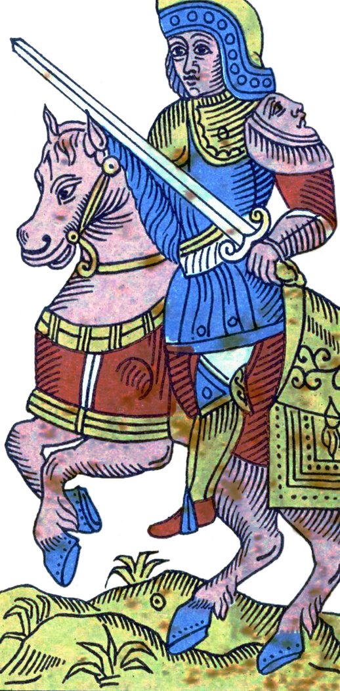
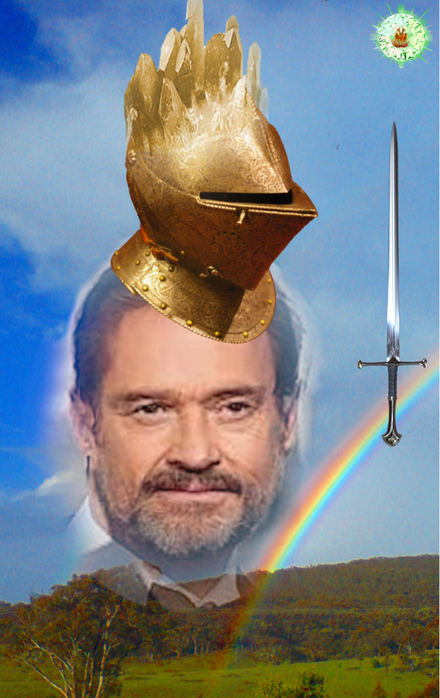
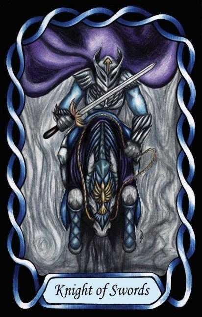

Knight of Swords
The Supervisor (ESTJ – TeSi)




Knight |
Concrete utilitarian |
||
Socio-Political |
|||
Extroverted Thinking Introverted Sensing |
|||
8.7% of population |
|||
Examples: Kelsey Grammar, Hugh Jackman, Billy Graham |
|||
Meaning of Life: Long-term Organisations |
|||
Astrology: Libra |
|||
Knights of Swords are forceful, organised, and directive individuals who bring structure into the socio-political realm. As ST Knights, they are grounded in the concrete world and focused on practical outcomes. Their extroverted thinking gives them a strong drive to impose order, enforce standards, and ensure that systems run efficiently. They value clarity, hierarchy, and decisive action.
Their introverted sensing provides them with a deep respect for established procedures, traditions, and proven methods. They rely on precedent and experience, and they expect others to follow the rules with the same consistency they do. This combination of Te and Si makes them highly effective at managing people, coordinating groups, and maintaining organisational stability.
Placed in the Air suit of Swords, their natural drive toward order becomes directed outward into the social and political sphere. They are the administrators, supervisors, and organisers of the Swords domain — individuals who take responsibility for ensuring that structures function and that people fulfil their roles. They excel at leadership in formal settings, especially where authority, hierarchy, and clear expectations are required.
Knights of Swords prefer environments where they can direct, coordinate, and oversee. They are at their best when managing teams, enforcing standards, or implementing long-term organisational plans. Their leadership style is firm, structured, and focused on results. They value loyalty, duty, and competence, and they expect others to meet the same standards they set for themselves.
At their core, they seek long-term organisation. Their meaning in life is found in building, maintaining, and improving systems that endure — whether those systems are bureaucratic, institutional, or social. They are the Supervisors of the Swords suit: decisive, orderly, and committed to the smooth functioning of the structures they oversee.